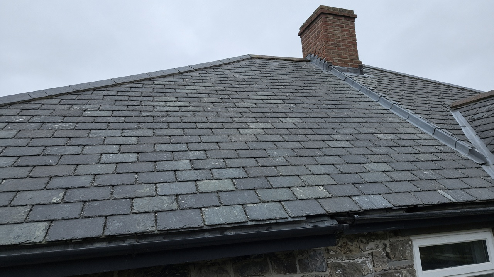

Synthetic teaching example · strong · not a client site
Finished roof, then the repair
An original teaching photograph of a finished slate slope, captioned under the picture, with one estimate action. The before note is smaller.
Generated teaching image. Not a photograph of a client job.

The finished slope is the proof. The before note stays smaller.
Request an estimateBefore: slipped courses along the same valley.